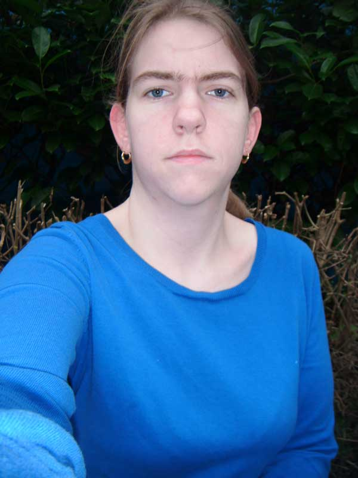

Biografie
Ik ben Angelique Van Steenwinkel geboren en woonachtig te Vilvoorde.
Ik ben studente in de opleiding Interactieve multimedia design te Thomas More Mechelen.
Aan de hand van mijn opleiding maak ik deze portfoliowebsite
die uiteraard nog verder zal evolueren gedurende de opleiding.
Alles wat ik nog leer en maak zowel voor school als
opdrachten buiten school zullen er bij opkomen.
In mijn vrije tijd hou ik mij bezig met het creatieve namelijk
handwerk (breien, haken), schetsen en knutselen.
Zelf heb ik ook een interesse in fotografie.
Ik fotografeer voornamelijk de lucht, natuur en plekken waar ik naar toe ga.
Voorbeelden hiervan kunnen jullie vinden in mijn portfolio.